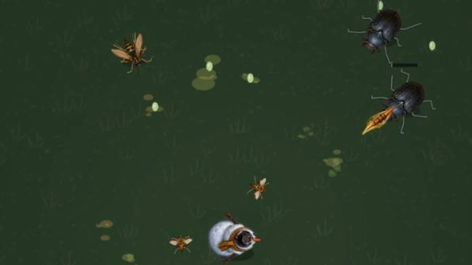
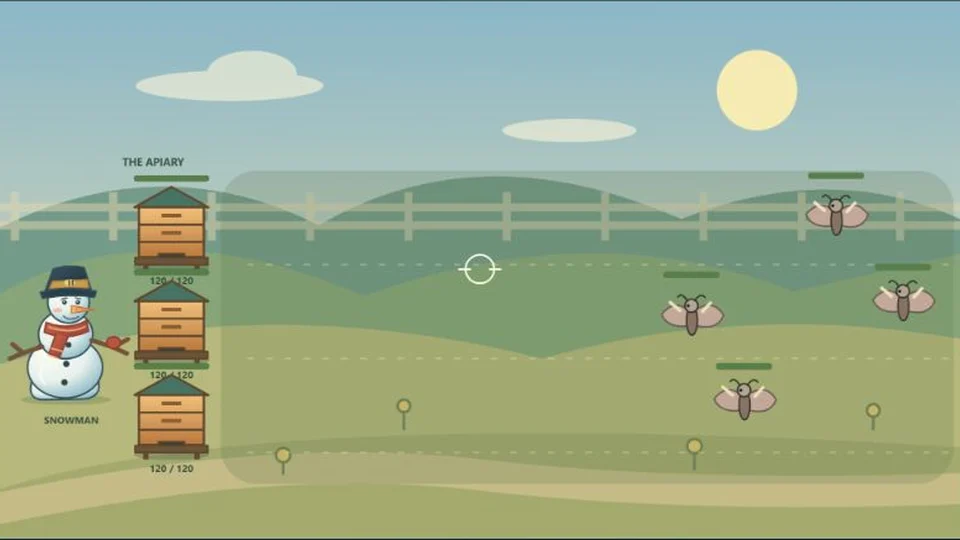
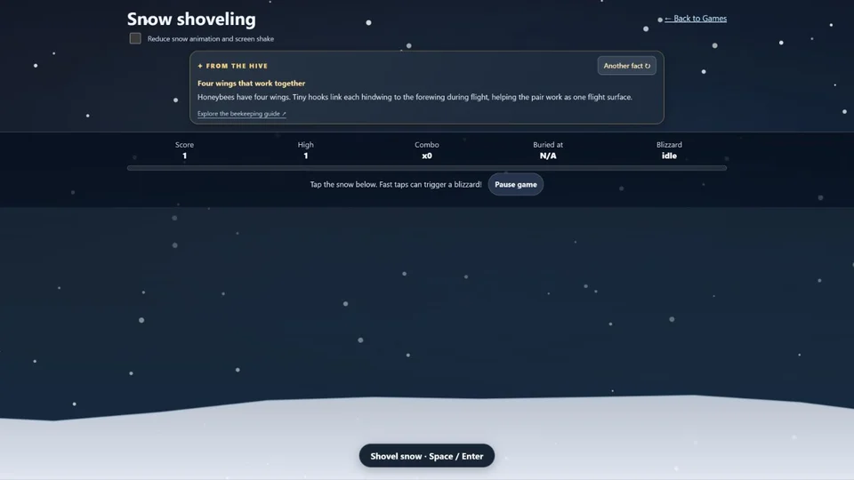
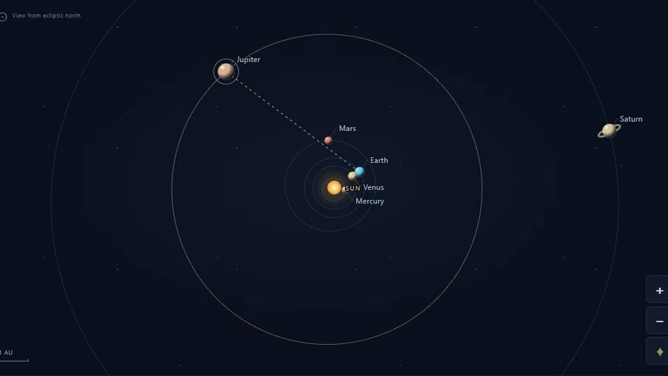

A little spare-time fun
Games
These are just little games I’ve created in my spare time. I don’t have anywhere else to host them, so they have a home here.
Updated · Three-stage survival
Queen of the Meadow 2
Earn beeswax and buy permanent character upgrades before your next run. Unlock explosive snowballs and Snow Shot, summon Royal Call or Blizzard, and fight through five stages. Choose five weapons, forge stronger fusions, and take on two nightmare stages. Play with mouse or keyboard, or touch controls on your phone.
Play Queen of the Meadow 2 →
Updated · Campaign & Sandbox
Apiary Defense
A snowman, three hives, and fifty waves of trouble. Choose a demanding campaign or unlimited-honey Sandbox. Throw snowballs, hire bees, brush mites off the hives and choose your upgrades.
Play Apiary Defense →
Play now
Snow shoveling
I made this game with HTML5 to brush up on my HTML. I started writing HTML when I was seven and was intrigued by what it could do. This was a fun refresher to make.
Open the snow game →
Explore · From planets to galaxies
Solar System Explorer
Travel from our Moon to thousands of planetary systems, nebulae, galaxies and the cosmic distance scale. Explore real spacecraft imagery, calculated orbits, ISS tracking, space weather and an interactive tide experiment.
Explore the solar system →
How to play
Tap or click the snow to shovel. With a keyboard, focus the shovel button and use Space or Enter. Your best score is saved in this browser when storage is available.
You can pause the game or reduce snow animation and screen shake. Your browser’s reduced-motion preference is respected, too.
More games on the way
A corner of the website for my spare-time projects.